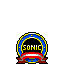
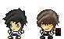

A História de Andrey & Camilla
A História de Andrey & Camilla

Estamos namorando há anos já, você acredita?

Since 8 de julho de 2023
Oi meu amor! Feliz aniversário de namoro. Não consigo acreditar que já estamos completando 1 ano de namoro. Parece cliché, mas ao passo que esse ano passou super rápido, tenho a sensação que te conheço desde a infância. Já não consigo mais imaginar minha vida sem você, não tem nada que eu planeje para meu futuro aonde você não esteja ao meu lado. Espero te fazer tão bem quanto você me faz bem.
Eu percebi que não existe outro alguém que eu queira passar o resto da minha vida junto além de vc, eu sei que tudo isso é simples e pequeno comparado a tudo que vc ja me fez, mas eu espero que vc goste e que vc possa guardar isso muito bem.
- Andrey, 26 de março de 2024


Andrey é um Nerdola de anos. Todo o seu poder está concentrado em seu topete caido, por isso ele o defenderá com toda sua energia. Seus hobbys são fazer piadas socialmente erradas e ficar estudando jogos e programação, além de xingar criança em jogo online.
Camilla é uma magisteriana de anos obcecada por fanfics e gatos. Seu poder mais forte é o de lembrar o que você falou, não importa quanto tempo tenha passado. O hobby de Camilla é estudar, estranhamente ela nao para de fazer isso, por mais que ela reclame.


Na praça do redondo as 18 horas acabamos nos conhecendo por meio de uma amiga em comum, jogamos vôlei e nos divertimos, fiquei de olho na Camilla dês da primeira vez que a vi. Depois de alguns dias fomos convidados por mais amigos em comum para nod encontrar na praça do redondo novamente, nos divertimos e jogamos, acompanhei ele até em casa e trocamos contato um com o outro e conversamos por muito tempo.
E dês de então Camilla foi laçada pelo charme meu, e conversamos por longos anos, nesses anos acabei levando muitos foras dela, mas como sou chato não desiste dela por nada. Sempre conversando sobre filmes e series, sobre humor quebrado, nossos dia a dia, qualquer minimo detalhe fazia com que nós conversassemos por horas.
Até hoje não se sabe como consegui tal feito, mas num piscar de olhos, estavamos conversando sobre nossos sentimentos um com o outro, apesar das diferenças de nossos pais, continuamos juntos até então, e espero que isso dure por muitos anos.


Nos conhecemos há
Estamos saindo há
Somos namorados há
Te venço no basquete há
Te irrito há


Veja o que algum dos nossos amigos tem a dizer pra gente!
>


 Lixeira
Lixeira